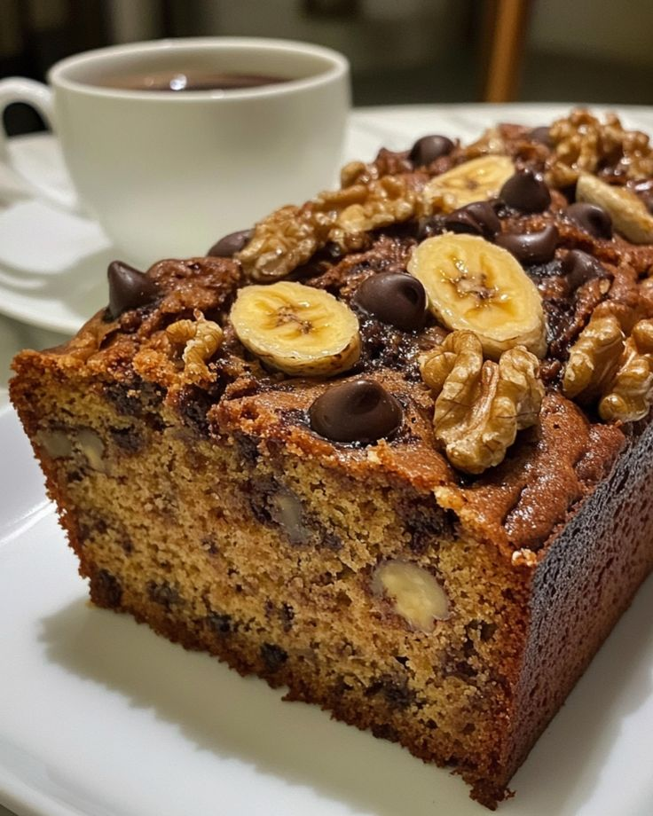

Banana Bread

Description
Banana bread is a moist, dense quick bread built around overripe bananas — the browner and
spottier, the better, since that's when they're sweetest and easiest to mash. Unlike yeast breads,
it doesn't need proofing or kneading; baking soda does the lifting, which makes it a forgiving
bake even for beginners. The batter comes together in one bowl in minutes, and the result is a
loaf with a golden, slightly cracked top and a soft, banana-forward crumb — equally good as a
breakfast slice, a snack, or dessert with a pat of butter while it's still warm.
Ingredients
- 3 ripe bananas, mashed
- 1/3 cup melted butter
- 3/4 cup sugar
- 1 large egg, beaten
- 1 teaspoon vanilla extract
- 1 teaspoon baking soda
- Pinch of salt
- 1 1/2 cups all-purpose flour
Steps
- Preheat the oven to 175°C (350°F) and grease a loaf pan.
- In a large mixing bowl, mash the bananas with a fork until mostly smooth.
- Stir the melted butter into the mashed banana.
- Mix in the sugar, beaten egg, and vanilla extract.
- Sprinkle the baking soda and salt over the mixture and stir in.
- Add the flour and mix just until combined — don't overmix, or the bread turns dense and tough.
- Pour the batter into the prepared loaf pan.
- Bake for 50–60 minutes, until a toothpick inserted into the center comes out clean.
- Let it cool in the pan for about 10 minutes, then turn it out onto a rack to cool completely before slicing.
Home